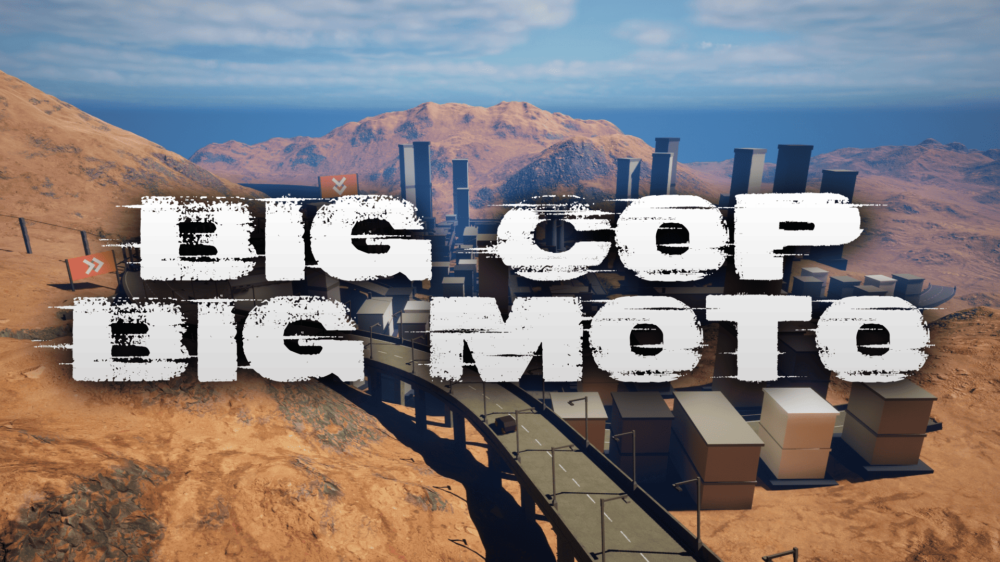
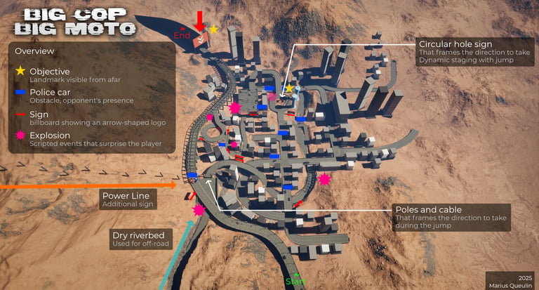
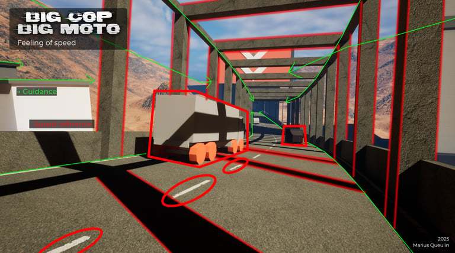
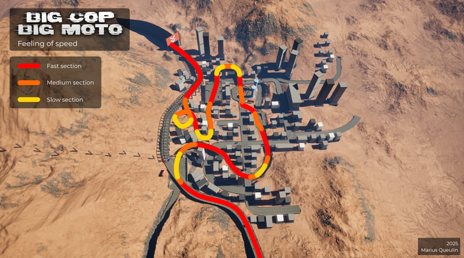
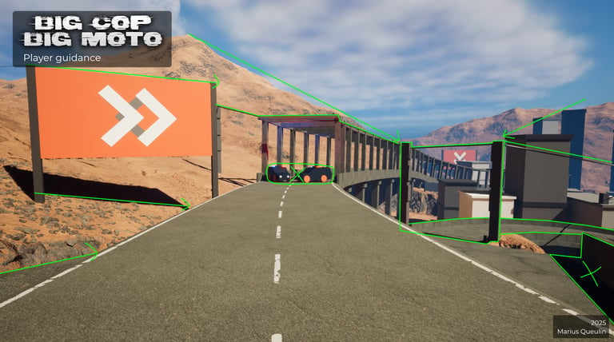
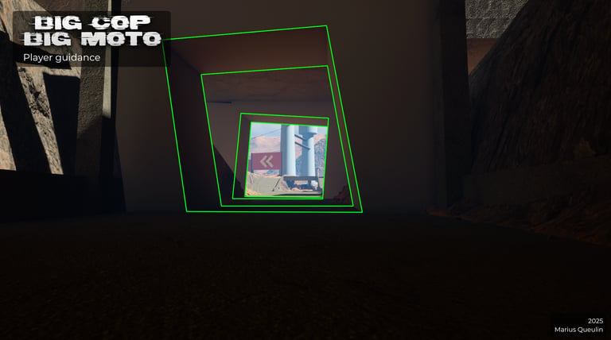
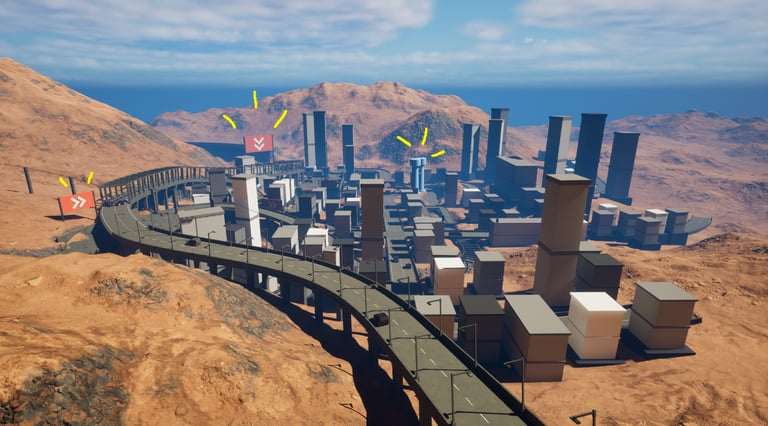
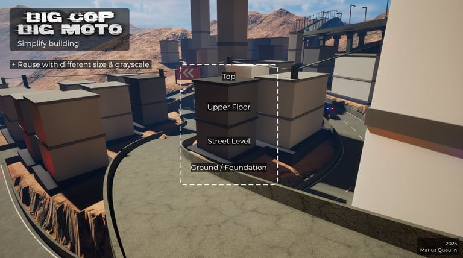
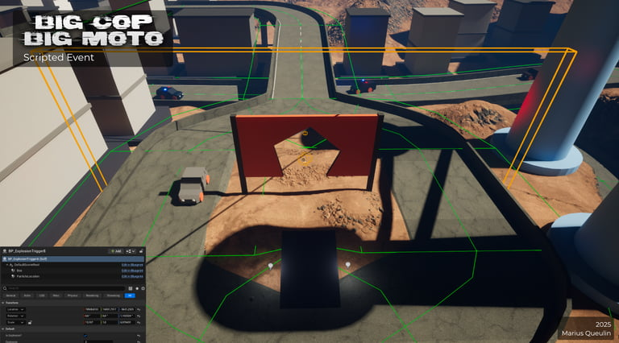

Big Cop Big Moto
Pitch
Pitch
En tant que hors-la-loi, échappez à la police en empruntant des chemins risqués à travers une ville post-apocalyptique.
As an outlaw, evade the police by taking risky routes through a post-apocalyptic city.
Informations
Details
- Outils
- Tools
- Unreal Engine, Git, G Suite, Photoshop
- Duree
- Duration
- Prototype created in one week
- Equipe
- Team
- 4 people (LD, 3C, ND & Producer)
- References
- References
- Mission Impossible, Fast & Furious
- Setting
- Setting
- Post-Apocalyptic
- Intentions
- Intentions
- Close call, Fast-paced, Chaos

Bien que les 3C jouent un rôle majeur dans la sensation de vitesse du joueur, notamment grâce à une caméra proche du sol en vue à la première personne et à des contrôles influencés par l'accélération, j'ai utilisé des motifs et textures au sol, comme les marquages blancs ou les imperfections du bitume usé. Les éléments du décor tels que les lampadaires, les poteaux, les bâtiments permettent de créer un rythme constant ou accéléré, en fonction de la vitesse du joueur.
On peut également mentionner le terrain avec les pentes, les montées et l'alternance de rythmes, avec des zones lentes entre les séquences rapides, qui renforce la perception de vitesse. En variant le tempo du niveau, on permet au joueur de ressentir plus clairement les moments où il peut vraiment lâcher les chevaux.
Although the 3Cs play a major role in the player's sense of speed — particularly thanks to a low-angle first-person camera and acceleration-influenced controls — level design can also reinforce this impression. I used patterns and textures on the ground, such as white markings or imperfections in worn asphalt. Elements of the scenery such as streetlights, poles, and buildings also contribute. The most important aspect is their rhythm in the landscape: this creates a constant or accelerated flow, depending on the player's speed.
We can also mention the terrain with its slopes and inclines and, more generally, the alternating rhythms, with slow areas between fast sequences, which reinforce the perception of speed. By varying the tempo of the level, the player can feel more clearly the moments when he can really "speed up."


Dans ce projet, j'ai mis l'accent sur l'orientation du joueur. Pour ce sujet, j'ai utilisé des éléments assez classiques comme les landmarks (qui peuvent d'ailleurs aussi contribuer à la sensation de vitesse). Je me suis concentré sur le point de vue du joueur pour placer ces éléments de manière concrète et pertinente. J'ai eu la chance de bénéficier d'une guidance visuelle pour le placement des assets et même pour la construction de la ville, ce qui m'a permis de les disposer de façon optimale pour le joueur.
In this project, I focused on player orientation. I used fairly classic elements such as visual references (which can also contribute to the sensation of speed). I focused on the player's point of view to place these elements in a concrete and relevant way. I was fortunate to have complete freedom in placing assets and even in building the city, which allowed me to optimize the space for the player.



Dans les projets courts, avec une expérience de jeu et des intentions fortes comme c'était le cas ici, il n'est pas toujours évident de créer des environnements cohérents. J'ai choisi de pousser cet aspect, à la fois pour renforcer l'immersion de l'expérience, mais aussi pour progresser sur le plan personnel et développer mes compétences en level design.
J'ai structuré la ville en plusieurs zones distinctes : la zone industrielle, le centre-ville avec son rond-point et ses voies rapides, et des quartiers résidentiels qui servent de transition. Je me suis basé sur ce que le joueur aurait déjà vu et j'ai veillé à ne placer aucun élément irréaliste, afin de préserver la cohérence du monde.
In short projects with a strong gaming experience and clear intentions, it is not always easy to create coherent environments. I chose to push this aspect, both to enhance the immersion of the experience and to progress on a personal level and develop my level design skills.
I structured the city into several distinct areas: the highway, the dry riverbed, the city center with its roundabout, the heights, the insertion path, and finally the end tunnel. I based my work on what the player would have already seen and made sure not to place any unrealistic elements, in order to preserve the coherence of the world.

